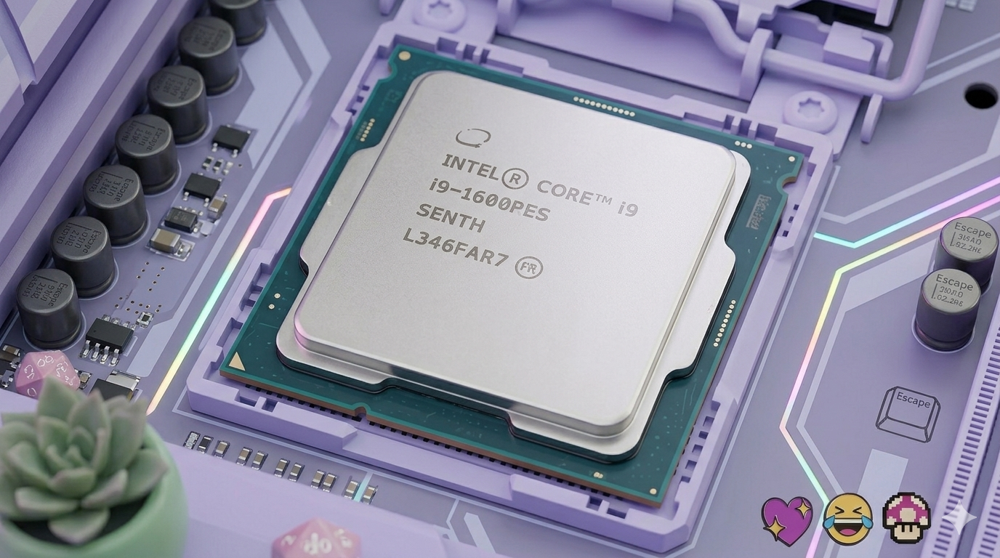
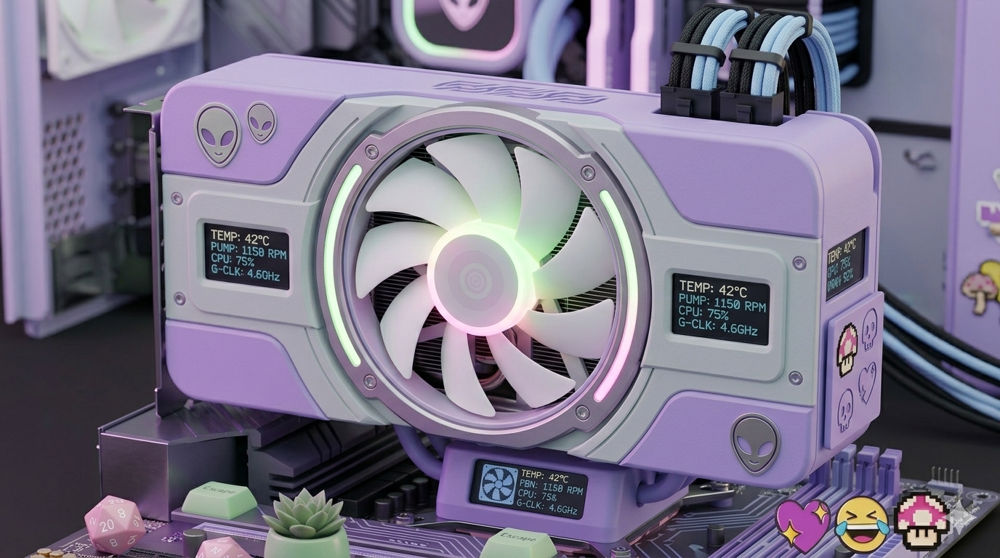
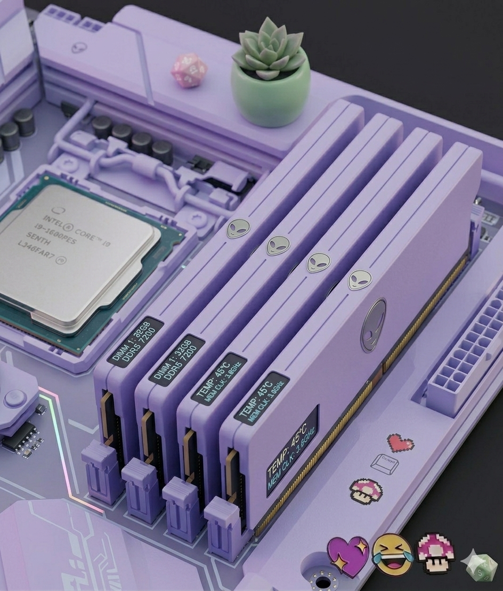
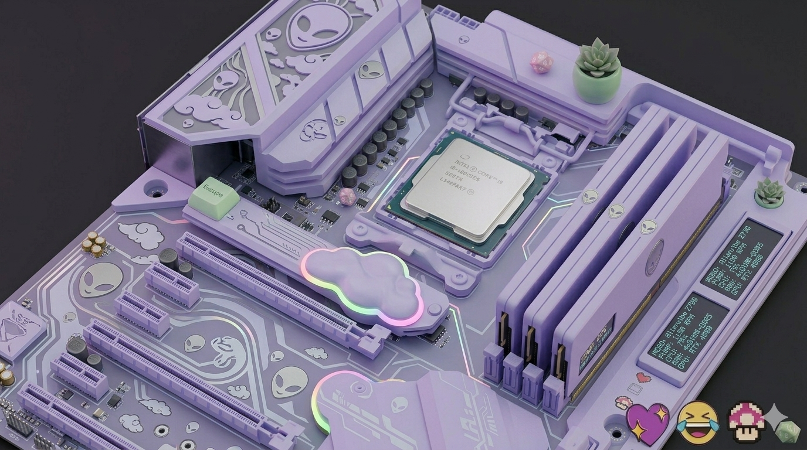
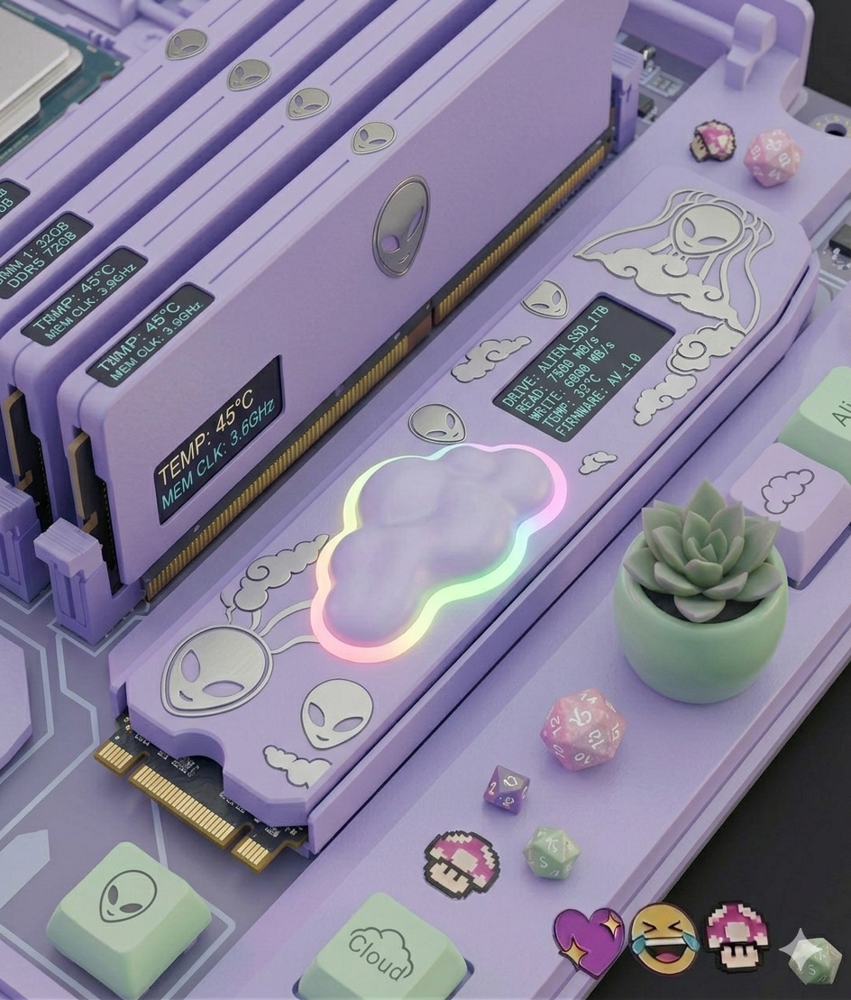
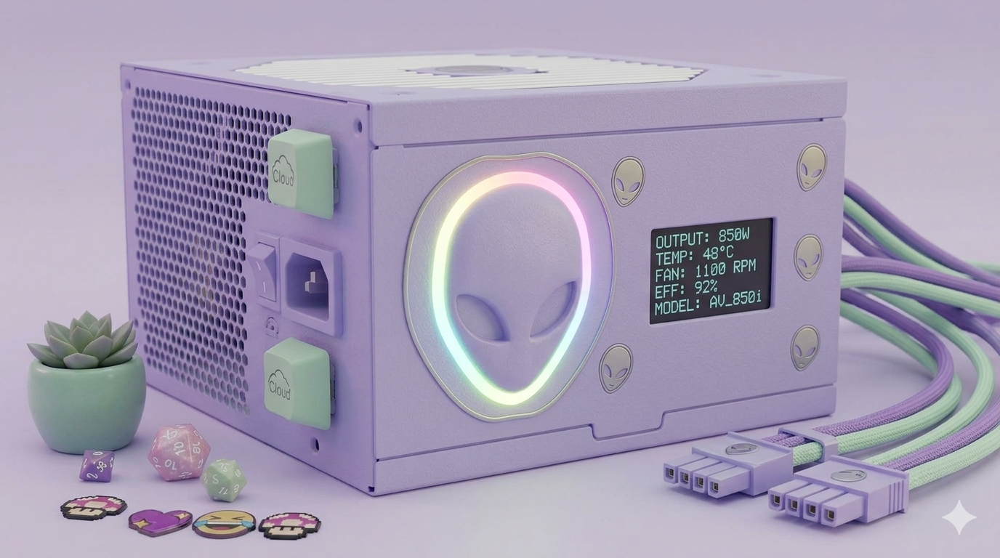
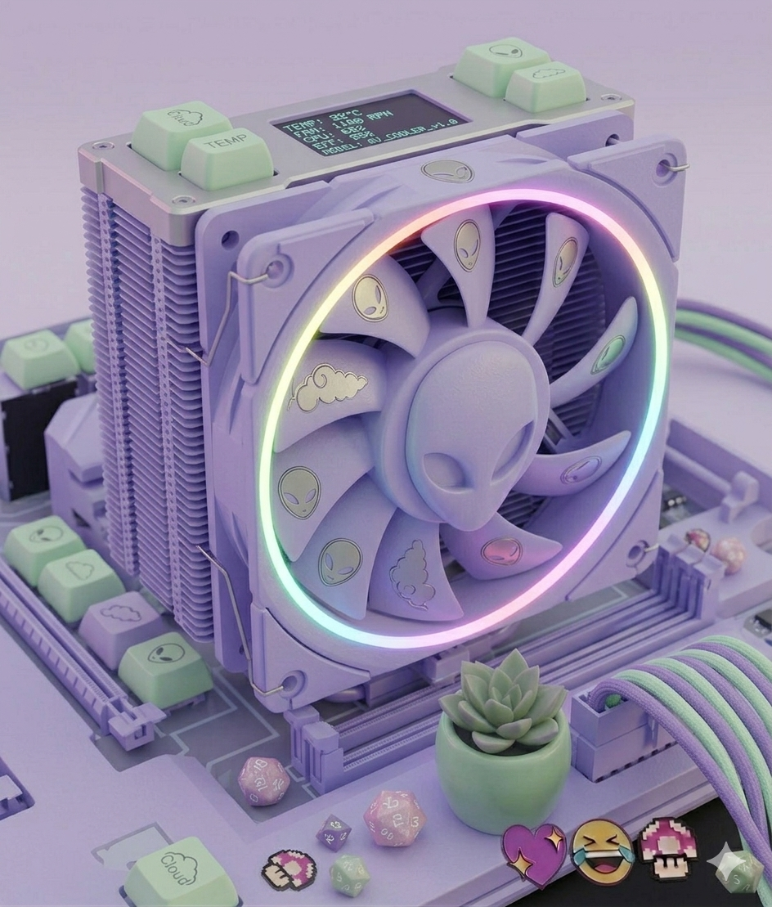

O processador é o “cérebro” do computador, responsável pela execução das tarefas. Ele impacta diretamente a velocidade do sistema e o desempenho em jogos. Nomes como i5, i7 ou Ryzen 5/7 indicam a categoria, enquanto números maiores (ex: 12400, 13700) representam gerações e modelos mais recentes.
A GPU é responsável pelos gráficos. Quanto mais potente, melhor a qualidade visual e o FPS nos jogos. Modelos como RTX 3060 ou 4060 seguem uma lógica de geração e desempenho — números maiores geralmente indicam evolução.


A RAM armazena dados temporários usados pelo sistema. Mais RAM permite rodar mais coisas ao mesmo tempo sem travamentos. Hoje, 16 GB é o ideal para jogos. DDR5 é mais recente que DDR4, porém mais cara.
A placa-mãe conecta todos os componentes. Ela define compatibilidade entre processador, memória e outros itens. O socket precisa ser compatível com a CPU, e o chipset define recursos disponíveis.


É onde ficam seus arquivos e jogos. O SSD é muito mais rápido que o HD, sendo essencial hoje. Modelos NVMe são ainda mais rápidos. O recomendado é pelo menos 480 GB ou 1 TB.
A fonte fornece energia para o sistema. Deve ter potência adequada e boa qualidade. Certificações como 80 Plus indicam eficiência e maior confiabilidade.


Evita o superaquecimento dos componentes. Temperaturas altas prejudicam desempenho e durabilidade. Para a maioria dos casos, um cooler a ar já resolve bem.